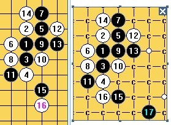

松二还原成松三（黑先如何胜）
首页
茗弈阁
#1 松二还原成松三（黑先如何胜） 作者：茗弈七夜 发表时间：2010-7-19 1:19:00
=======上图对应的爱五子棋谱代码如下，以便你拆解：========
h8h9h7h6i9g8i8g7g6j9i10i7j8h10i5l8
======================================================［ 茗弈小刀 于 2010-7-27 11:16:02 时奖励此帖[金币加 20 威望加1］
#2 Re:松二还原成松三（黑先如何胜） 作者：米 发表时间：2010-7-19 6:12:22
=======上图对应的爱五子棋谱代码如下，以便你拆解：========
h8h9h7h6i9g8i8g7g6j9i10i7j8h10i5l8i4
======================================================这个黑15已经必胜了，白16摆哪里都防不住。具体到这个16，如图黑17必胜。
#3 Re:松二还原成松三（黑先如何胜） 作者：越狱行辕 发表时间：2010-7-19 8:24:51
呵呵 等待 SONIX 的 大饼 这个饼有点大奥
#4 Re:松二还原成松三（黑先如何胜） 作者：茗弈七夜 发表时间：2010-7-19 10:34:12
楼上正解,赞呢
#5 Re:松二还原成松三（黑先如何胜） 作者：sonix 发表时间：2010-7-19 11:36:32

有3个点没解决
#6 Re:Re:松二还原成松三（黑先如何胜） 作者：米 发表时间：2010-7-19 12:14:28
=======上图对应的爱五子棋谱代码如下，以便你拆解：========
h8h9h7h6i9g8i8g7g6j9i10i7j8h10i5i4l10
======================================================
=======上图对应的爱五子棋谱代码如下，以便你拆解：========
h8h9h7h6i9g8i8g7g6j9i10i7j8h10i5h5k4l5j4
======================================================
=======上图对应的爱五子棋谱代码如下，以便你拆解：========
h8h9h7h6i9g8i8g7g6j9i10i7j8h10i5h5k4k8j4i4l6k7k5m7j7j5h3k6i2
======================================================楼上三图黑必胜路线如上，其中第三个较复杂所以多摆一些，摆到这个长连解三三破坏对方vcf的招法为止。
［ 茗弈小刀 于 2010-7-25 17:21:59 时奖励此帖[金币加 20 威望加1］
#7 Re:松二还原成松三（黑先如何胜） 作者：sonix 发表时间：2010-7-19 12:55:20
 335566.rar
335566.rar
感谢米LS
=======上图对应的爱五子棋谱代码如下，以便你拆解：========
h8h9h7h6i9g8i10g7i8i7g6j9j8i5j4l8
======================================================
=======上图对应的爱五子棋谱代码如下，以便你拆解：========
h8h9h7h6i9g8i10g7i8i7g6j9j8l8i5h5
======================================================此两图求解
#8 Re:松二还原成松三（黑先如何胜） 作者：岑小鱼 发表时间：2010-7-19 18:06:26
7楼 第2图按3打的谱 黑17直接盖16 难道这里有边界问题?